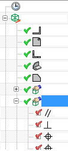

使用查找与几何体关联的 PMI 命令来查找当前工作部件中引用选定几何体作为关联对象的全部 PMI。这包括在工作部件中创建的 PMI、WAVE 链接的 PMI，或者使用 PMI 装配过滤器添加到工作部件中的 PMI。
当选定几何体是一个或多个 PMI 的关联对象时，NX 将创建临时显示来显示查询结果。
当前工作视图，已选择一个面 |
使用查找与几何体关联的 PMI 命令后的视图 |
在该视图中：
所有的 PMI 都被放在当前工作图层中
即使在选择几何体时与该几何体关联的某些 PMI 对象处于隐藏状态，在该视图中也将显示
如果 PMI 与视图相关，并且与在另一个工作视图中选择的几何体关联，仍然会显示该对象，而不考虑创建视图
|
提示 |
进行查询时选择正确的几何体很重要。只会对选定的几何体进行关联 PMI 查找。例如，如果您选择了一个实体进行查询，但 PMI 是与该实体的边关联，则不会显示任何 PMI 作为查询的结果。 |
您可以放大或旋转来查看查询结果，当您刷新显示、选择另一个视图或方位，或者选择任意命令，都会擦除 PMI 临时显示视图。
选中创建查询结果视图选项时，NX 将在模型视图中把查询结果保存为一个名为查询结果的视图，查询结果视图显示在部件导航器中模型视图节点的下方。

查询结果视图将覆盖之前进行的任何查找与几何体关联的 PMI 操作，如果您想保存上一次的结果，您必须先重命名该视图。
|
应用模块 |
PMI |
|
菜单 |
信息→产品制造信息→查找与几何体关联的 PMI |
|
快捷菜单 |
选择模型几何体，然后右击并选择查找与几何体关联的 PMI |
从快捷选中时显示对话框首选项：
|
菜单 |
首选项→产品制造信息→PMI |
|
对话框中的位置 |
常规选项卡→查找与几何体关联的 PMI 组→从快捷选中时显示对话框 |